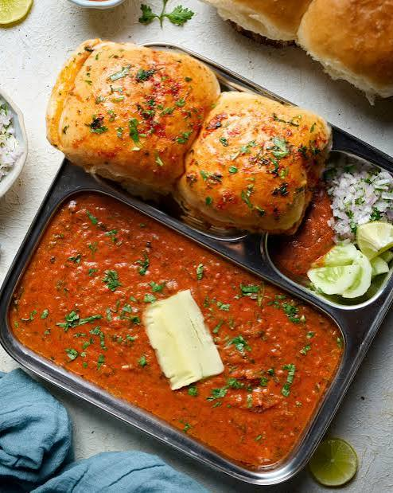

Pav Bhaji

To make pav bhaji, boil and mash potatoes, cauliflower, peas, and other vegetables until soft. Prepare the bhaji by sautéing butter, onions, ginger, garlic, tomatoes, and pav bhaji masala, then add the mashed vegetables and cook everything together until thick and flavorful. Finally, toast the pav with butter and serve hot with the bhaji, chopped onions, coriander, and lemon.
Description
Ingredients
For the Bhaji
- Potatoes: 3 medium, boiled
- Cauliflower: 1 cup, chopped
- Green peas: 1 cup
- Carrot: 1 medium, chopped
- Onion: 2 medium, finely chopped
- Tomatoes: 3 medium, finely chopped
- Ginger-garlic paste: 1 tbsp
- Green chilies: 1-2, chopped
- Butter: 2-3 tbsp
- Pav bhaji masala: 2 tsp
- Red chili powder: ½ tsp
- Salt: To taste
- Fresh coriander leaves: 2 tbsp, chopped
- Lemon juice: 1 tbsp
For the Pav
- Pav buns: 8
- Butter: 2-3 tbsp
- Pav bhaji masala: ½ tsp
- Fresh coriander leaves: 1 tbsp, chopped
For Serving
- Finely chopped onions: 1 cup
- Lemon wedges: 4-5
- Fresh coriander leaves: 2 tbsp, chopped
- Butter: For topping
Steps
Prepare the Vegetables
- Boil the potatoes, cauliflower, peas, and carrot until they become soft.
- Drain the vegetables and mash them together thoroughly.
- Keep the mashed vegetables aside while preparing the bhaji.
Make the Bhaji
- Heat butter in a large pan over medium heat.
- Add the chopped onions and cook until they become soft and lightly golden.
- Add ginger-garlic paste and green chilies. Sauté for a few seconds.
- Add the chopped tomatoes and cook until they become soft and mushy.
- Add pav bhaji masala, red chili powder, and salt. Mix everything well.
- Add the mashed vegetables and mix them thoroughly with the masala.
- Add a little water and mash everything together using a masher.
- Cook the bhaji for several minutes until it becomes thick and well combined.
- Add fresh coriander leaves and lemon juice, then mix everything together.
Toast the Pav
- Heat a tawa or flat pan and add a little butter.
- Sprinkle a small amount of pav bhaji masala over the butter.
- Cut the pav buns in half and place them cut-side down on the pan.
- Toast the pav on both sides until they become lightly crispy and golden.
Serve the Pav Bhaji
- Transfer the hot bhaji to serving plates.
- Add a small piece of butter on top of each serving.
- Serve with toasted pav, chopped onions, fresh coriander leaves, and lemon wedges.
Home